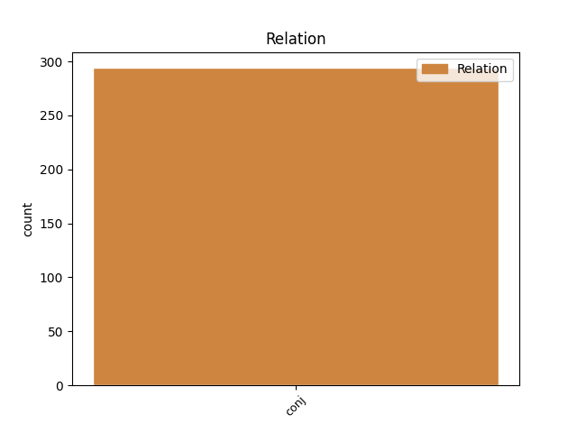
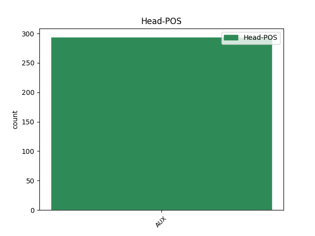
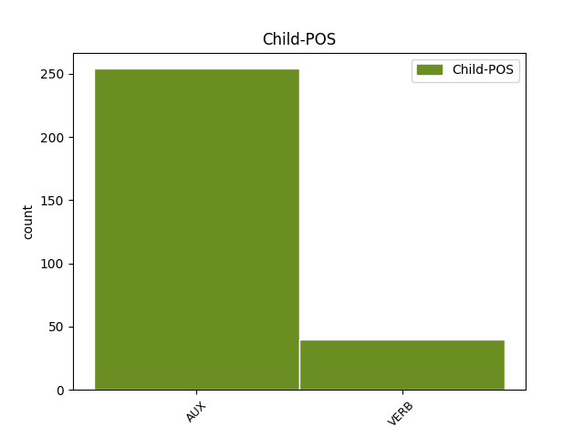

Distribution of features within this leaf



Agreement Rules sorted by frequency.
- When the dependent token is the conjunct(conj) of the head token, and the head token is VERB and the dependent token is VERB.
1 - _ _ _ _ 0 _ _ _
2 Ըստ _ _ _ _ 0 _ _ _
3 Ձեզ _ _ _ _ 0 _ _ _
4 ՝ _ _ _ _ 0 _ _ _
5 ինչ _ _ _ _ 0 _ _ _
6 ՞ _ _ _ _ 0 _ _ _
7 փոխեցին _ _ _ _ 0 _ _ _
8 հուլիսյան _ _ _ _ 0 _ _ _
9 դեպքերը _ _ _ _ 0 _ _ _
10 մեր _ _ _ _ 0 _ _ _
11 իրականության _ _ _ _ 0 _ _ _
12 մեջ _ _ _ _ 0 _ _ _
13 , _ _ _ _ 0 _ _ _
14 արդյոք _ _ _ _ 0 _ _ _
15 քաղաքացին _ _ _ _ 0 _ _ _
16 ավելի _ _ _ _ 0 _ _ _
17 պահանջատեր _ _ _ _ 0 _ _ _
18 ՞ _ _ _ _ 0 _ _ _
19 է _ _ _ _ 0 _ _ _
20 դարձել _ _ _ _ 0 _ _ _
21 , _ _ _ _ 0 _ _ _
22 այնքան _ _ _ _ 0 _ _ _
23 է _ _ _ _ 0 _ _ _
24 փոխվել _ _ _ _ 0 _ _ _
25 , _ _ _ _ 0 _ _ _
26 որ _ _ _ _ 0 _ _ _
27 այլ _ _ _ _ 0 _ _ _
28 որակի _ _ _ _ 0 _ _ _
29 ընտրություններ _ _ _ _ 0 _ _ _
30 կունենանք ունենալ VERB _ Aspect=Prosp|Mood=Cnd|Number=Plur|Person=1|Polarity=Pos|Subcat=Tran|Tense=Pres|VerbForm=Fin|Voice=Act 0 _ _ _
31 և _ _ _ _ 0 _ _ _
32 այլ _ _ _ _ 0 _ _ _
33 արդյունք _ _ _ _ 0 _ _ _
34 կարձանագրենք արձանագրել VERB _ Aspect=Prosp|Mood=Cnd|Number=Plur|Person=1|Polarity=Pos|Subcat=Tran|Tense=Pres|VerbForm=Fin|Voice=Act 30 conj _ LTranslit=arjanagrel|SpaceAfter=No|Translit=karjanagrenk’
35 ՝ _ _ _ _ 0 _ _ _
36 հասնելով _ _ _ _ 0 _ _ _
37 համակարգափոխության _ _ _ _ 0 _ _ _
38 : _ _ _ _ 0 _ _ _
Disagree Examples:
1 « _ _ _ _ 0 _ _ _
2 Քոռանամ քոռանալ VERB _ Aspect=Prosp|Mood=Sub|Number=Sing|Person=1|Polarity=Pos|Subcat=Intr|Tense=Pres|VerbForm=Fin|Voice=Mid 0 _ _ _
3 ես _ _ _ _ 0 _ _ _
4 , _ _ _ _ 0 _ _ _
5 — _ _ _ _ 0 _ _ _
6 ասաց _ _ _ _ 0 _ _ _
7 , _ _ _ _ 0 _ _ _
8 — _ _ _ _ 0 _ _ _
9 աղջիկս _ _ _ _ 0 _ _ _
10 դժբախտացավ դժբախտանալ VERB _ Aspect=Perf|Mood=Ind|Number=Sing|Person=3|Polarity=Pos|Subcat=Intr|Tense=Past|VerbForm=Fin|Voice=Mid 2 conj _ LTranslit=džbaxtanal|SpaceAfter=No|Translit=džbaxtac’av
11 , _ _ _ _ 0 _ _ _
12 դե _ _ _ _ 0 _ _ _
13 արի _ _ _ _ 0 _ _ _
14 ու _ _ _ _ 0 _ _ _
15 հետո _ _ _ _ 0 _ _ _
16 ապացուցիր _ _ _ _ 0 _ _ _
17 , _ _ _ _ 0 _ _ _
18 որ _ _ _ _ 0 _ _ _
19 կուսությունը _ _ _ _ 0 _ _ _
20 սայթաքելուց _ _ _ _ 0 _ _ _
21 է _ _ _ _ 0 _ _ _
22 կորցրել _ _ _ _ 0 _ _ _
23 » _ _ _ _ 0 _ _ _
24 ։ _ _ _ _ 0 _ _ _
1 Էս _ _ _ _ 0 _ _ _
2 կողմերում _ _ _ _ 0 _ _ _
3 « _ _ _ _ 0 _ _ _
4 մեկ _ _ _ _ 0 _ _ _
5 վեր _ _ _ _ 0 _ _ _
6 » _ _ _ _ 0 _ _ _
7 ( _ _ _ _ 0 _ _ _
8 անգլ _ _ _ _ 0 _ _ _
9 . _ _ _ _ 0 _ _ _
10 ՝ _ _ _ _ 0 _ _ _
11 one _ _ _ _ 0 _ _ _
12 - _ _ _ _ 0 _ _ _
13 up _ _ _ _ 0 _ _ _
14 ) _ _ _ _ 0 _ _ _
15 կանաչ _ _ _ _ 0 _ _ _
16 սունկ _ _ _ _ 0 _ _ _
17 կար կամ VERB _ Aspect=Imp|Mood=Ind|Number=Sing|Person=3|Polarity=Pos|Subcat=Intr|Tense=Imp|VerbForm=Fin|Voice=Mid 0 _ _ _
18 , _ _ _ _ 0 _ _ _
19 կուլ _ _ _ _ 0 _ _ _
20 կտանք տալ VERB _ Aspect=Prosp|Mood=Cnd|Number=Plur|Person=1|Polarity=Pos|Subcat=Tran|Tense=Pres|VerbForm=Fin|Voice=Act 17 conj _ LTranslit=tal|Translit=ktank’
21 ու _ _ _ _ 0 _ _ _
22 մի _ _ _ _ 0 _ _ _
23 կյանք _ _ _ _ 0 _ _ _
24 կշահենք _ _ _ _ 0 _ _ _
25 ։ _ _ _ _ 0 _ _ _
1 Հորն _ _ _ _ 0 _ _ _
2 իհարկե _ _ _ _ 0 _ _ _
3 ավելի _ _ _ _ 0 _ _ _
4 լուրջ _ _ _ _ 0 _ _ _
5 հարցերի _ _ _ _ 0 _ _ _
6 շարան _ _ _ _ 0 _ _ _
7 ունեմ ունեմ VERB _ Aspect=Imp|Mood=Ind|Number=Sing|Person=1|Polarity=Pos|Subcat=Tran|Tense=Pres|VerbForm=Fin|Voice=Act 0 _ _ _
8 , _ _ _ _ 0 _ _ _
9 բայց _ _ _ _ 0 _ _ _
10 քանի _ _ _ _ 0 _ _ _
11 որ _ _ _ _ 0 _ _ _
12 իր _ _ _ _ 0 _ _ _
13 « _ _ _ _ 0 _ _ _
14 գրասենյակի _ _ _ _ 0 _ _ _
15 » _ _ _ _ 0 _ _ _
16 տարածքն _ _ _ _ 0 _ _ _
17 է _ _ _ _ 0 _ _ _
18 , _ _ _ _ 0 _ _ _
19 ինքն _ _ _ _ 0 _ _ _
20 իրեն _ _ _ _ 0 _ _ _
21 այսպես _ _ _ _ 0 _ _ _
22 ձևակերպվեց ձևակերպել VERB _ Aspect=Perf|Mood=Ind|Number=Sing|Person=3|Polarity=Pos|Subcat=Intr|Tense=Past|VerbForm=Fin|Voice=Pass 7 conj _ LTranslit=jewakerpel|Translit=jewakerpvec’
23 հարցը _ _ _ _ 0 _ _ _
24 : _ _ _ _ 0 _ _ _
1 Բայց _ _ _ _ 0 _ _ _
2 վերադառնանք վերադառնալ VERB _ Aspect=Prosp|Mood=Sub|Number=Plur|Person=1|Polarity=Pos|Subcat=Intr|Tense=Pres|VerbForm=Fin|Voice=Mid 0 _ _ _
3 նոր _ _ _ _ 0 _ _ _
4 նյութին _ _ _ _ 0 _ _ _
5 , _ _ _ _ 0 _ _ _
6 այսքանը _ _ _ _ 0 _ _ _
7 գիտեինք գիտել VERB _ Aspect=Imp|Mood=Ind|Number=Plur|Person=1|Polarity=Pos|Subcat=Tran|Tense=Imp|VerbForm=Fin|Voice=Act 2 conj _ LTranslit=gitel|SpaceAfter=No|Translit=giteink’
8 : _ _ _ _ 0 _ _ _
1 Նոր _ _ _ _ 0 _ _ _
2 եկեղեցական _ _ _ _ 0 _ _ _
3 երկնաքերը _ _ _ _ 0 _ _ _
4 օծվեց օծել VERB _ Aspect=Perf|Mood=Ind|Number=Sing|Person=3|Polarity=Pos|Subcat=Intr|Tense=Past|VerbForm=Fin|Voice=Pass 0 _ _ _
5 , _ _ _ _ 0 _ _ _
6 իսկ _ _ _ _ 0 _ _ _
7 հնի _ _ _ _ 0 _ _ _
8 գմբեթի _ _ _ _ 0 _ _ _
9 վրայի _ _ _ _ 0 _ _ _
10 խաչը _ _ _ _ 0 _ _ _
11 չկար կամ VERB _ Aspect=Imp|Mood=Ind|Number=Sing|Person=3|Polarity=Neg|Subcat=Intr|Tense=Imp|VerbForm=Fin|Voice=Mid 4 conj _ LTranslit=kam|SpaceAfter=No|Translit=čkar
12 : _ _ _ _ 0 _ _ _